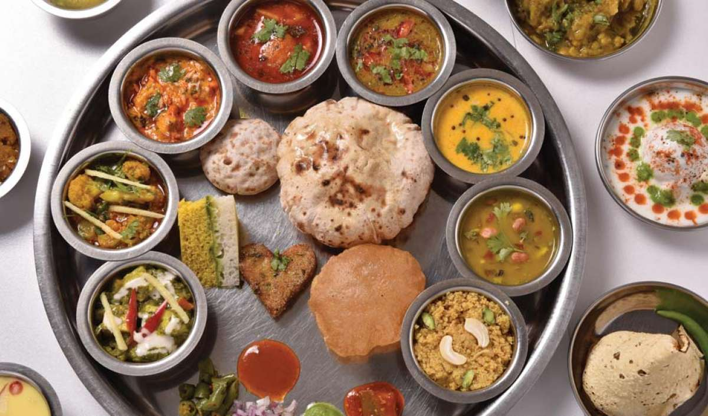
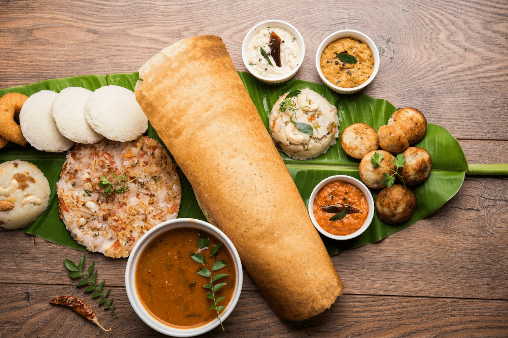
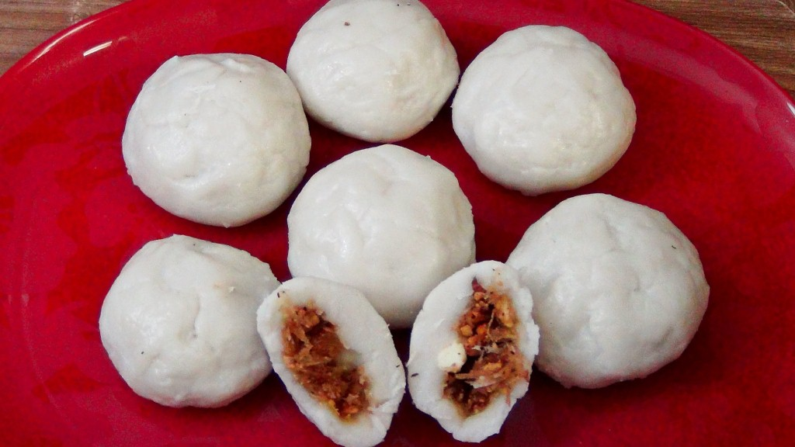

North Indian
From parathas (stuffed flatbreads), puris (deep-fried bread), chaats (savoury snacks), gucchi pilaf (rice with morel mushrooms) to kebabs (cooked meat dishes), niharis (slow-cooked stew of mutton), daulat ki chaat (an avant garde version of milk skin), jalebi (deep-fried sweet pretzel) and the famous raan (a mutton-dish) , north India scores beautifully on vibrancy of cuisine.
South Indian
From idlis (steamed rice cakes) to dosa (crepe-like pancakes), sambar (spicy lentil stew) to rasam (world’s oldest consommé), food of South India is a culture that has developed on the principle of Ayurveda.
North East Indian
Comprising seven states, known as the Seven Sisters, along with the inclusion of Sikkim, Northeast India is known for its interesting tribal cuisine and beverage culture, which hasn’t changed much since the medieval period.
West Indian
The food culture of western India, essentially Gujarat, Maharashtra and Goa, was initially developed by tribes (predominantly fishermen and brahmins).